Un'interfaccia moderna per l'acquisitore Fluke Hydra 2620A / 2625A: lettura in grande, strumento analogico a bobina mobile, grafico, acquisizione su più canali e CSV. Con un ESP8266 diventa anche una pagina web, raggiungibile dal telefono.
Il Fluke Hydra 2620A / 2625A è un acquisitore dati da banco con 21 canali: tensioni continue e alternate, resistenze a 2 e 4 fili, frequenza, termocoppie e termoresistenze Pt100. È ancora uno strumento ottimo, ma il software originale è dell'epoca di DOS e Windows e oggi è difficile farlo funzionare.
Fluke Hydra Monitor è un unico script Python (Tkinter, matplotlib e pyserial) che parla con lo strumento direttamente sulla seriale RS-232, gira su Linux e non richiede altro. Mostra la lettura in grande, uno strumento analogico a bobina mobile disegnato come quelli da pannello, un grafico che scorre, l'acquisizione su più canali e il salvataggio in CSV.
Con un ESP8266 e un MAX3232 la stessa interfaccia diventa una pagina web, raggiungibile anche dal telefono: è Hydra Web, descritto più sotto.
Versione 1.2.0 · 73 de IV3HGA
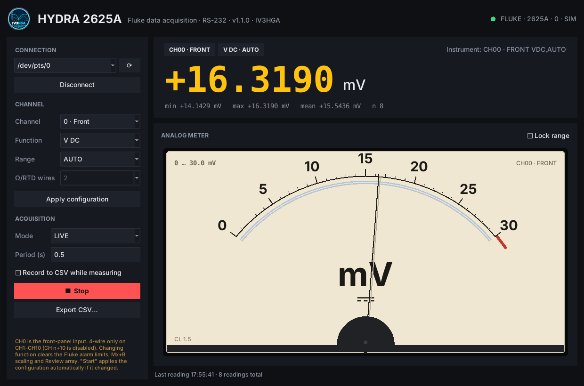
V DC, V AC, Ω a 2 e 4 fili, frequenza, termocoppie J K E T N R S B C, Pt100. 21 canali, con il CH0 (ingresso frontale) ben evidenziato.
LIVE con lo strumento analogico, MONITOR con il grafico, Trigger + LAST? per le configurazioni a scansione, MULTI-CHANNEL con più canali insieme.
Quadrante color crema, specchio antiparallasse, ago con dinamica del 2° ordine e leggero overshoot, rimbalzo a fondo scala, spia OL. Portate 1-3-10-30 automatiche e scala a zero centrale per valori negativi.
Autoscala che si allarga subito e si restringe solo quando serve, prefissi SI sugli assi, linea della media, finestra da 10 s a 1 h, limiti manuali con suffissi (300m, 1.5k).
Qualsiasi insieme dei 21 canali, ognuno con funzione e portata proprie: riquadri con i valori in tempo reale, una traccia per canale e vista normalizzata quando le grandezze sono diverse.
Statistiche min/max/media, gestione degli overload, CSV scritto lettura per lettura. Un solo thread possiede la porta seriale, tre tentativi sugli errori, e lo strumento viene sempre lasciato pulito con MON 0.
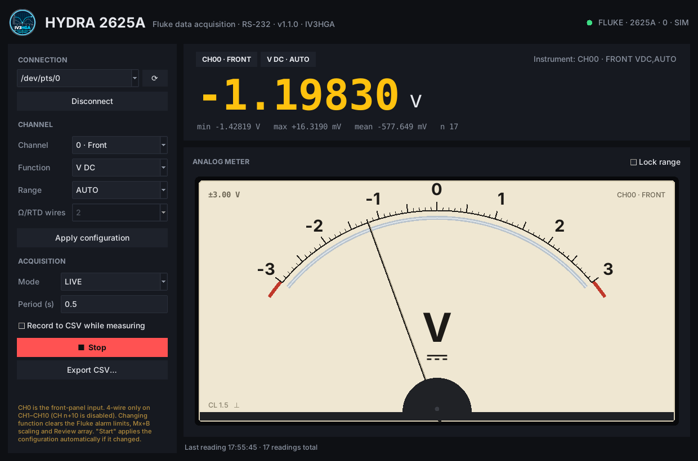
Ingresso negativo: lo strumento passa da solo a una scala ±3 V a zero centrale.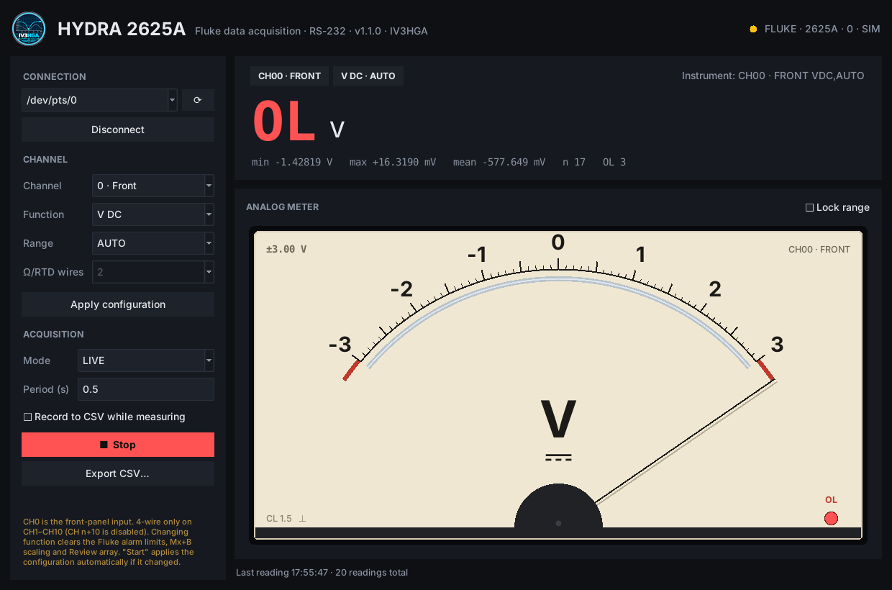
Overload: ago a fondo scala, spia OL accesa e lettura in rosso.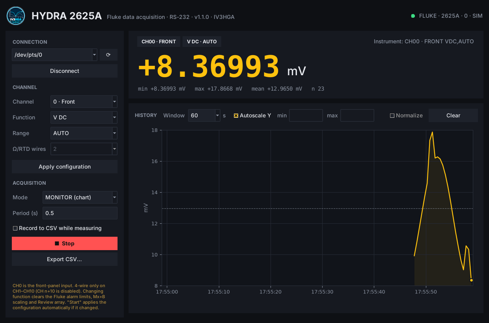
MONITOR: grafico che scorre, con autoscala intelligente.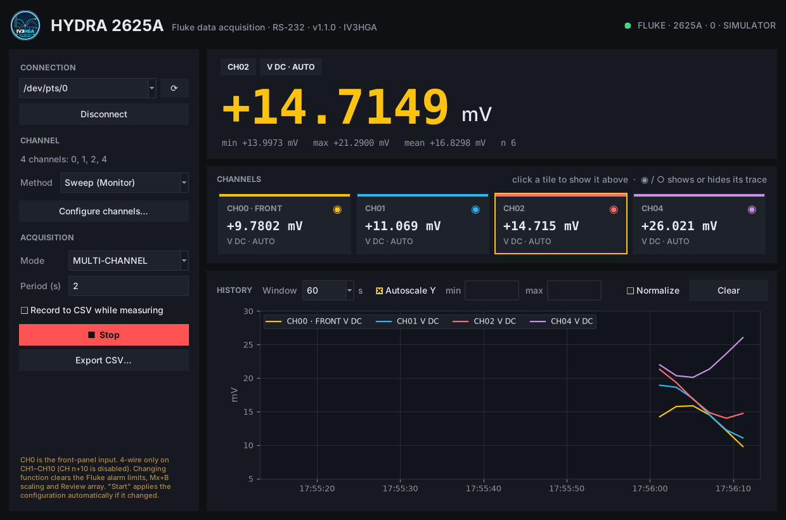
MULTI-CHANNEL: un riquadro e una traccia per ogni canale.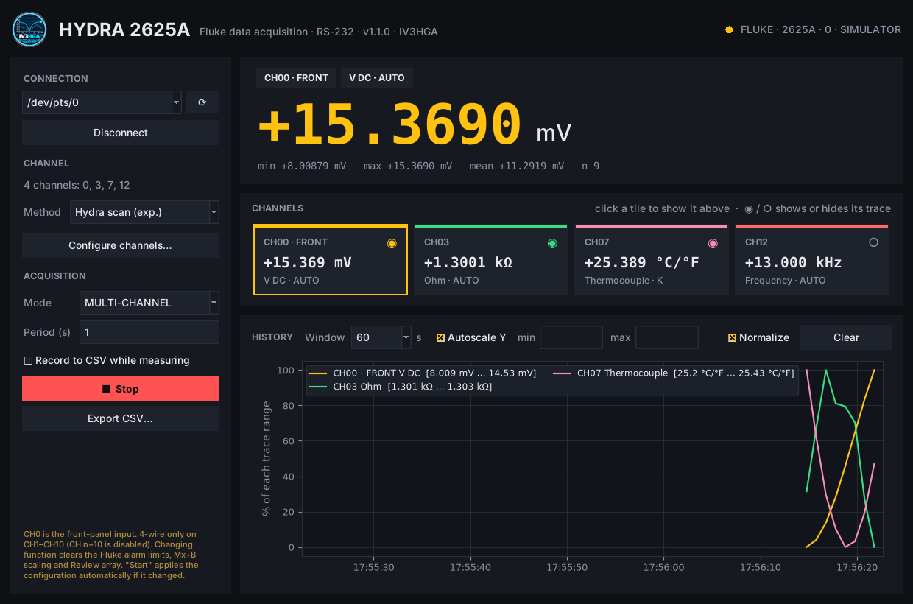
Tensione, resistenza, temperatura e frequenza insieme, in vista normalizzata.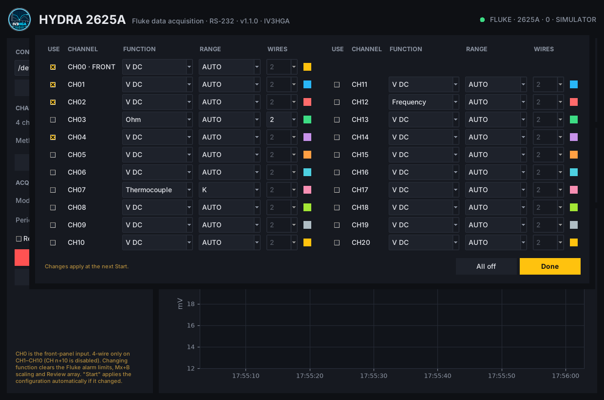
Configurazione dei canali: CH n+10 sta accanto a CH n, per le misure a 4 fili.Dalla versione 1.2.0 c'è anche un firmware per ESP8266. Un Wemos D1 mini (Pro) con un convertitore MAX3232 collegato alla porta RS-232 dell'Hydra trasforma l'acquisitore in uno strumento di rete: aprendo http://hydra.local da qualsiasi browser, anche dal telefono, si trova la stessa interfaccia del programma desktop.
L'acquisizione gira sull'ESP8266, non nel browser: continua anche a pagina chiusa, e riaprendola da qualsiasi dispositivo si ritrova la sessione in corso con le ultime 600 letture conservate sulla scheda.
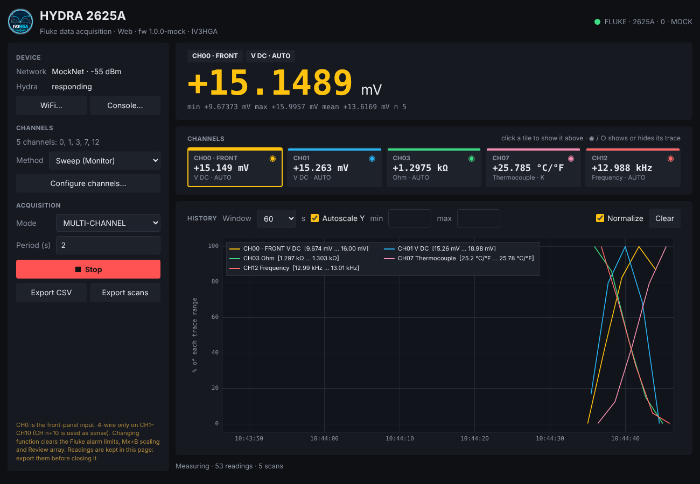
LIVE con lo strumento analogico, MONITOR con il grafico, Trigger + LAST? e MULTI-CHANNEL (Sweep o Hydra scan), con lettura grande, statistiche, riquadri dei canali e finestra di configurazione.
CSV di tutte le letture e, in multicanale, una riga per scansione. Una console manda comandi grezzi all'Hydra: comoda per verificare la sintassi della scansione.
La scheda espone la seriale sulla porta TCP 2625: nel programma desktop basta scegliere socket://hydra.local:2625 per usarlo senza cavo. Mentre il PC è collegato, il controllo dal web è in pausa.
Configurazione WiFi dalla pagina, access point di riserva con captive portal, nome mDNS hydra.local, aggiornamenti OTA.
Solo il core Arduino per ESP8266. La pagina è compressa in gzip dentro il firmware e non ha bisogno di internet: nessun CDN.
La pagina si adatta allo schermo: sullo smartphone lettura, riquadri e grafico vengono impilati, i comandi finiscono in fondo.
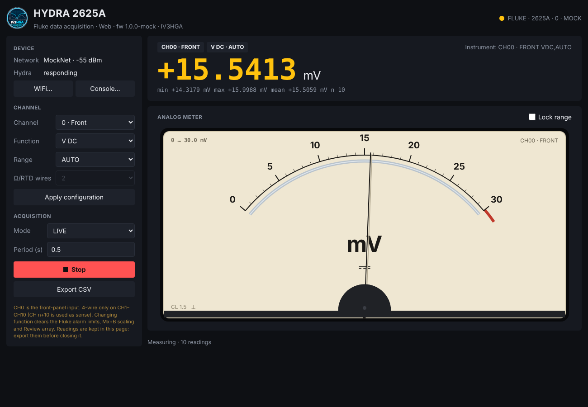
LIVE nel browser, con lo strumento analogico.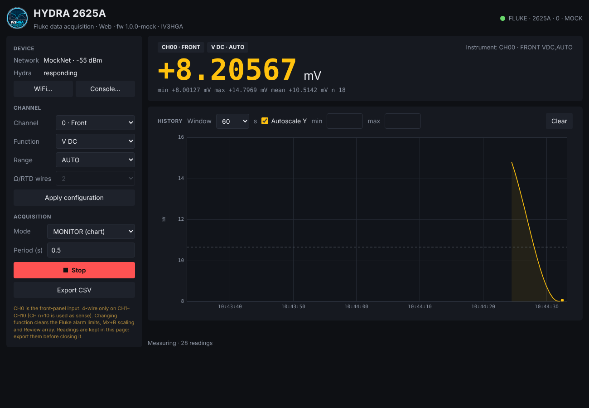
MONITOR: il grafico con autoscala.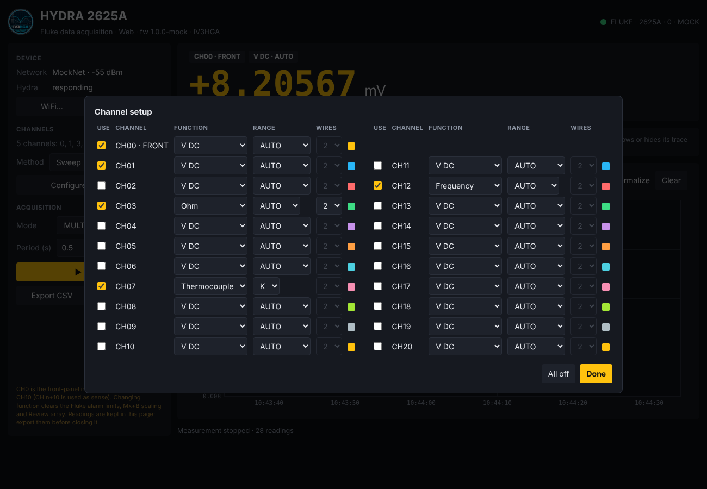
Configurazione dei canali, salvata sulla scheda.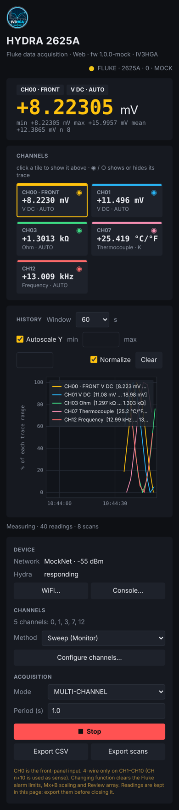
Sullo smartphone.Wemos D1 mini Pro MAX3232 (3,3 V) Hydra RS-232 (DB9) ───────────────── ─────────────── ────────────────── 3V3 ───────────────── VCC GND ───────────────── GND ────────────────────── pin 5 GND TX (GPIO1) ────────── T1IN T1OUT ──────────── RX dell'Hydra RX (GPIO3) ────────── R1OUT R1IN ──────────── TX dell'Hydra 5V ── USB, o step-down a 5 V dall'alimentazione 9–16 V dell'Hydra
HYDRA_UART_SWAP 1 in config.h l'Hydra passa su D8 (TX, GPIO15) e D7 (RX, GPIO13): la USB resta libera per programmare la scheda e i messaggi di avvio dell'ESP8266 non arrivano allo strumento.firmware/hydra_web/hydra_web.ino e carica. In alternativa PlatformIO:cd firmware pio run -e d1_mini_pro -t upload
hydra2625, modificabile in config.h); la pagina si apre da sola, altrimenti vai su http://192.168.4.1.La pagina parla con la scheda tramite una piccola API JSON, utilizzabile anche da script propri:
| Metodo e percorso | A che cosa serve |
|---|---|
GET /api/status | stato di scheda, strumento, sessione e WiFi |
GET /api/readings?since=SEQ | le letture successive a SEQ, al massimo 200 per chiamata |
POST /api/start, /api/stop | avvia o ferma: modalità, metodo, periodo e configurazione dei canali |
POST /api/cmd | un comando grezzo all'Hydra (solo a misura ferma) |
GET/POST /api/config | la configurazione dei canali, salvata sulla scheda |
POST /api/wifi, /api/reboot | rete e riavvio |
Per modificare la pagina senza riprogrammare la scheda c'è firmware/mock_server.py, che simula il dispositivo su http://localhost:8080; build_web.py rigenera la pagina compressa per il firmware. Le letture restano nella pagina finché è aperta (fino a 200 000): esportale prima di chiuderla.
Sulla seriale (9600 baud, 8N1, senza controllo di flusso) ogni comando ASCII termina con CR. L'Hydra risponde con un'eventuale riga di dati seguita da un prompt: => comando eseguito, ?> errore di sintassi, !> errore di esecuzione. Se lo strumento ha l'eco attiva, il programma la toglie da solo.
| Comando | A che cosa serve |
|---|---|
Ctrl-C, *IDN? | alla connessione: annulla comandi a metà e legge l'identificazione |
SCAN 0, MON 0 | ferma scansione e Monitor prima di configurare e all'uscita |
FUNC ch,VDC,range … | configura il canale (VDC, VAC, OHMS, FREQ, TEMP) |
MON 1,ch + MON_VAL? | legge il canale tramite la funzione Monitor (LIVE, MONITOR) |
*TRG + LAST? ch | modalità a trigger: ultimo valore della scansione |
In multicanale il metodo predefinito "Sweep" sposta il Monitor da un canale all'altro e scarta la prima lettura dopo ogni cambio, che potrebbe appartenere ancora al canale precedente.
Tk (interfaccia) thread di lavoro (porta seriale)
──────────────── ────────────────────────────────
pulsanti ─► coda lavori ──► connetti / configura / avvia
letture a cadenza fissa
_poll() ogni 100 ms ◄── coda eventi ◄── letture, stato, errori
├─ lettura, statistiche, CSV
├─ strumento analogico
└─ grafico ogni 300 ms
next += periodo: il periodo non deriva nel tempo.La posizione x dell'ago segue un sistema del secondo ordine, integrato a passi di 8 ms e disegnato a circa 60 fotogrammi al secondo:
Con ζ = 0,55 l'ago supera di poco il valore e torna indietro, come uno strumento vero; ai fondo scala la velocità si inverte e si riduce al 25 %, e l'ago rimbalza.
# Debian / Ubuntu sudo apt install python3-tk python3-serial python3-matplotlib git clone https://github.com/metallarox/fluke_hydra_monitor.git cd fluke_hydra_monitor python3 fluke_hydra_monitor.py
*IDN?.Interfaccia RS-232 a 9600 baud, 8 bit, nessuna parità, 1 bit di stop, nessun handshake. Se l'Hydra non risponde, controlla il cavo (dritto o null-modem) sul manuale.
sudo usermod -aG dialout $USER
poi esci e rientra nella sessione.
python3 tools/hydra_simulator.py # es. "listening on /dev/pts/5" python3 fluke_hydra_monitor.py # collegati a /dev/pts/5
Il simulatore permette di provare tutta l'interfaccia, con opzioni per tensione, ampiezza, periodo e overload.
Una lettura per riga, sempre in unità base (V, Ω, Hz, °C/°F); gli overload hanno il valore vuoto.
timestamp,channel,function,value,unit 2026-10-26T16:53:08.412,0,V DC,0.0160495,V
In multicanale, una riga per scansione e una colonna per canale:
timestamp,CH00 V DC (V),CH03 Ohm (Ω),CH07 Thermocouple (°C/°F) 2026-10-26T17:55:21.004,0.0143606,1301.2,25.295
INTVL, TRIGGER 1, SCAN 1) è sperimentale: la sintassi va confermata su un'unità reale. Il metodo "Sweep" usa solo comandi già verificati ed è quello predefinito. Nel firmware questi comandi sono in config.h (HSCAN_*) e si possono provare dalla console della pagina con INTVL?, TRIGGER?, SCAN?.La documentazione completa è nel repository: guida al firmware in firmware/README.md, guida d'uso in docs/USER_GUIDE.md e protocollo in docs/PROTOCOL.md. Per le basi delle misure di tensione, corrente e resistenza c'è il capitolo sul multimetro.